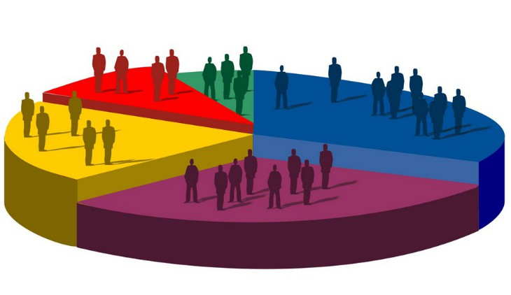

<div>
    <div><h1 class="text-center"><dt>En Construccion</dt></h1></div>
<div id="carousel-example-generic" class="carousel slide" data-ride="carousel" data-interval="2000">
  <!-- Indicators -->
  <ol class="carousel-indicators">
    <li data-target="#carousel-example-generic" data-slide-to="0" class="active"></li>
    <li data-target="#carousel-example-generic" data-slide-to="1"></li>
    <li data-target="#carousel-example-generic" data-slide-to="2"></li>
  </ol>
  <!-- Wrapper for slides -->
  <div class="carousel-inner">
    <div class="item active">
        
      <div class="carousel-caption">
        <h3>Medicion de crecimiento economico familiar</h3>
      </div>
    </div>
    <div class="item">
        
      <div class="carousel-caption">
        <h3>Medicion del aumento productuvo tanto de los terrenos como familiares</h3>
      </div>
    </div>
    <div class="item">
        
      <div class="carousel-caption">
        <h3>Medicion de los ingresos economicos</h3>
      </div>
    </div>
  </div>

  <!-- Controls -->
  <a class="left carousel-control" href="#carousel-example-generic" role="button" data-slide="prev">
    <span class="glyphicon glyphicon-chevron-left" aria-hidden="true"></span>
    <span class="sr-only">Previous</span>
  </a>
  <a class="right carousel-control" href="#carousel-example-generic" role="button" data-slide="next">
    <span class="glyphicon glyphicon-chevron-right" aria-hidden="true"></span>
    <span class="sr-only">Next</span>
  </a>
</div>
</div>